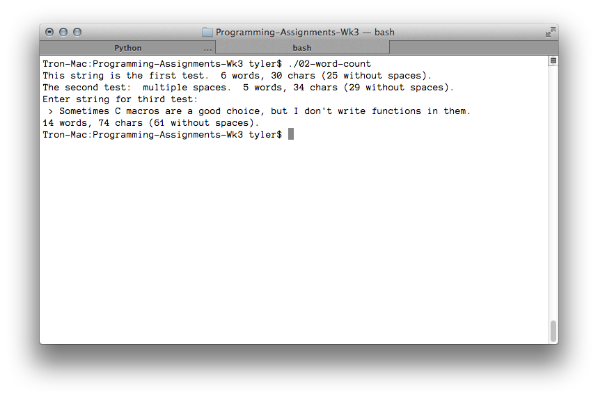

---

layout: default
title: 02-word-count

---

{% highlight c++ %}
// Tyler Mumford, 2014
// This assignment's directive is to "write a word count macro."
// However, I perhaps wasn't paying enough attention in class, and
// am not familiar with that concept.
// Instead, I have written a word count function.

#include <stdio.h>
#include <stdbool.h>

int wordCount (char *);
int charCount (char *);
int charCountNoSpaces (char *);
bool charIsSpace (char);

int main () {
	char *testString1 = "This string is the first test.";
	char *testString2 = "The second test:  multiple spaces.";
	char testString3[512];

	printf("%s  ", testString1);
	printf("%i words, %i chars (%i without spaces).\n", wordCount(testString1), charCount(testString1), charCountNoSpaces(testString1));

	printf("%s  ", testString2);
	printf("%i words, %i chars (%i without spaces).\n", wordCount(testString2), charCount(testString2), charCountNoSpaces(testString2));

	printf("Enter string for third test: \n > ");
	scanf("%[^\r\n\0]", testString3);
	printf("%i words, %i chars (%i without spaces).\n", wordCount(testString3), charCount(testString3), charCountNoSpaces(testString3));

}

int wordCount (char *arg) {
	int i = 0,  result = 0;
	bool prevIsSpace = true;

	do {
		if (charIsSpace(arg[i])) {
			if (!prevIsSpace) {
				result++;
				prevIsSpace = true;
			}
		} else {
			prevIsSpace = false;
		}
	} while (arg[i++] != '\0');

	return result;

}

int charCount (char *arg) {
	int i = 0, result = 0;
	while (arg[i++] != '\0') {
		result++;
	}

	return result;
}

int charCountNoSpaces (char *arg) {
	int i = 0, result = 0;
	while (arg[i] != '\0') {
		if (!charIsSpace(arg[i++]))
			result++;
	}

	return result;
}

bool charIsSpace (char c) {
	return (c == ' ' || c == '\t' || c == '\r' || c == '\n' || c == '\0');
} 

{% endhighlight %}


